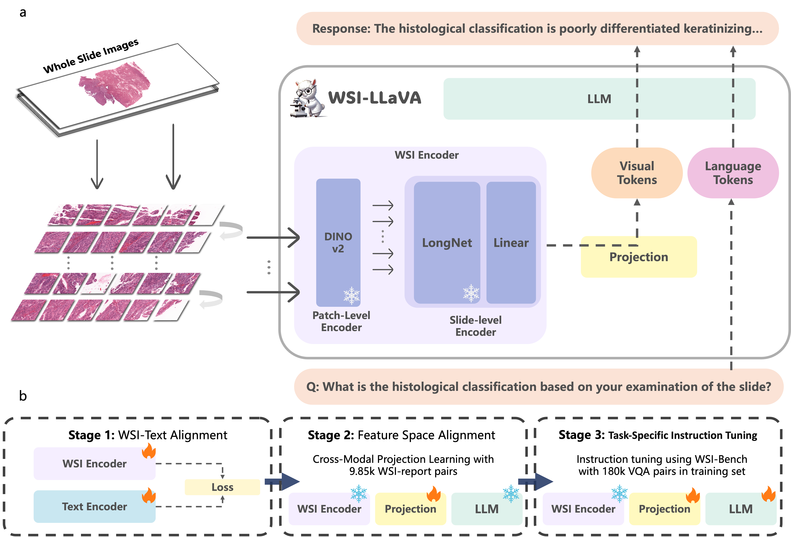

Yuci LiangMaster's student
Computer Science and Technology, |
 |
[Pinned Message]I will graduate with a Master's degree in 2026 and am seeking Ph.D. opportunities for Fall 2026.
About Me
I am currently a Master's student in Computer Science and Technology at Shenzhen University, supervised by Prof. Song Wu and Prof. Linlin Shen.
My research interests lie in multimodal large language models, multi-agent systems, reinforcement learning from human feedback, computer vision, and their applications in medical AI, with a focus on digital pathology analysis, multi-modality diagnosis, etc.
Welcome to contact me about research collaboration, please don't hesitate to drop me emails if you are interested.
News
[06/2025] One paper accepted by ICCV 2025.
[05/2025] One paper accepted by MICCAI 2025.(Early Accept)
Publications
-
 WSI-LLaVA: A Multimodal Large Language Model for Whole Slide Image
Yuci Liang*, Xinheng LYU*, Meidan Ding, Wenting Chen, Xiaohan Xing, Jipeng Zhang, Xiangjian He, Song Wu, Sen Yang, Xiyue Wang, Linlin Shen.
International Conference on Computer Vision (ICCV), 2025.
Paper | GitHub -

WSI-Agents: A Collaborative Multi-Agent System for Multi-Modal Whole Slide Image Analysis
Xinheng Lyu, Yuci Liang, Wenting Chen, Meidan Ding, Jiaqi Yang, Huang Guolin, Daokun Zhang, Xiangjian He, Linlin Shen.
International Conference on Medical Image Computing and Computer Assisted Intervention (MICCAI), 2025.
Paper | GitHub
Award
Shenzhen University Graduate Freshman Special Award
Lanqiao Cup Provincial Competition — Second Prize, Java B Group